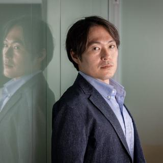

The people who draw the strategy take it all the way to production.
The same person who shapes the strategy with leadership writes the code and ships a system that runs in production. Our members come from top-tier global strategy firms and from product teams in Japan and abroad, and bring both to every engagement.
Why Ambidextrous
One team, no game of telephone.
From executives to consultants, from consultants to engineers: requirements get thinner every time they change hands. At Stellar AIz, the person who talked to leadership designs and builds the system, so the original intent reaches production.
Typical consultancies and AI startups
Separate consultants and engineers, stuck at the PoC
Executivesrelay →Consultantsrelay →Engineers
Consultants have never built AI, so they don't truly understand it
Engineers find it hard to talk with clients from a business perspective
A grounded production architecture is barely touched
Stellar AIz
From business problem to implementation, end to end
Leadership & front line⇄Consultant-engineers
We do the PoC engineering ourselves and find AI uses that deliver impact with leadership and the front line
The same people design the production architecture, so moving from PoC to production is smooth
We discover business requirements as we go, building them from scratch with you
Leadership
Leadership
Two former McKinsey leaders in digital and AI, now leading Stellar AIz on both the strategy and technology side.

CEO & Representative Director
Nobuaki Fukumoto
福元 允亮
Former Associate Partner at McKinsey & Company, leading the Japan digital and AI practice as part of QuantumBlack Leadership. Previously at Deloitte and IBM. Frequent keynote speaker on generative AI.
Executive Officer, Consulting Division, a Prime-listed company
Former Engagement Manager and Digital Specialist at McKinsey & Company, leading the development of the firm's internal generative AI platform. Formerly at Red Hat, tech lead at Goodpatch in Berlin, and a researcher at the University of Tokyo and the National Cancer Center. Graduate of Kyoto University.
Red Hat, Engagement Lead
McKinsey & Company, Engagement Manager / Digital Specialist
National Cancer Center / University of Tokyo, Cloud Engineering Lead
Goodpatch GmbH, Tech Lead (Berlin)
Origami, GREE
Members
Members
Members with backgrounds in strategy consulting and engineering. Select a card to see each career history.
PROFILE
CAREER
Take AI beyond the PoC.
Talk to us about AI strategy, AI agent development or bringing doggies into your organization.